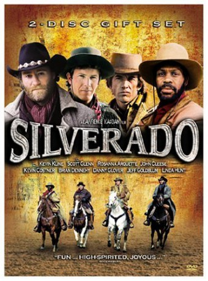

IMDB-Wertung: 7.2 / 10
IMDB-Wertung: 7.2 / 10  Metascore:
Metascore: 
In 1880, four men travel together to the city of Silverado. They come across with many dangers before they finally engage the "bad guys" and bring peace and equality back to the city.
Alternativ: Silverado
Auszeichnungen: für 2 Oscars nominiert
 IMDB-Wertung: 7.2 / 10 Metascore:
In 1880, four men travel together to the city of Silverado. They come across with many dangers before they finally engage the "bad guys" and bring peace and equality back to the city.
Jahr: 1985
Dauer: 133 Minuten
FSK: 12
Land: USA Studio: Columbia PicturesTonspuren:
Untertitel:
Auflösung: 1080p (1920x800) Größe: 9902 MB
Genre: Action, Drama, Krimi, Western
Regisseur:  Lawrence Kasdan
Lawrence Kasdan
Drehbuch: Lawrence Kasdan, Mark Kasdan
Soundtrack: Bruce Broughton
Darsteller:
 Kevin Kline als Paden
Kevin Kline als Paden Scott Glenn als Emmett
Scott Glenn als Emmett Kevin Costner als Jake
Kevin Costner als Jake Danny Glover als Mal
Danny Glover als Mal John Cleese als Sheriff Langston
John Cleese als Sheriff Langston Todd Allen als Deputy Kern
Todd Allen als Deputy Kern Dick Durock als Bar Fighter
Dick Durock als Bar Fighter Rosanna Arquette als Hannah
Rosanna Arquette als Hannah Rusty Meyers als Conrad
Rusty Meyers als Conrad James Gammon als Dawson
James Gammon als Dawson Brian Dennehy als Cobb
Brian Dennehy als Cobb Linda Hunt als Stella
Linda Hunt als Stella Jeff Goldblum als Slick
Jeff Goldblum als Slick Ray Baker als McKendrick
Ray Baker als McKendrick Joe Seneca als Ezra
Joe Seneca als Ezra Lynn Whitfield als Rae
Lynn Whitfield als Rae Jeff Fahey als Tyree
Jeff Fahey als Tyree Richard Jenkins als Kelly
Richard Jenkins als Kelly Pepe Serna als Scruffy
Pepe Serna als Scruffy Walter Scott als Swann
Walter Scott als Swann Brion James als Hobart , uncredited
Brion James als Hobart , uncredited Marvin J. McIntyre als Clerk
Marvin J. McIntyre als Clerk Sheb Wooley als Cavalry Sergeant
Sheb Wooley als Cavalry Sergeant Bill Thurman als Carter
Bill Thurman als Carter Ted White als Hoyt
Ted White als HoytDatei: X:\HD-Western-1980-1999\Silverado (1985, FSK12, 1920x800).mkv seit 14.09.2015
Festplatte: HD Eastern+Western
 Es gibt insgesamt 29 Filme in der Gruppe 'HD-Western-1980-1999'
Es gibt insgesamt 29 Filme in der Gruppe 'HD-Western-1980-1999'